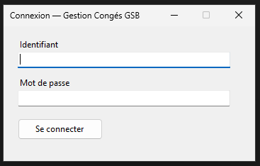
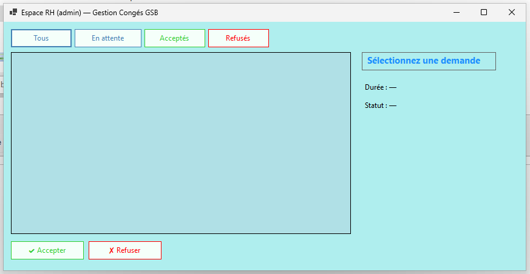
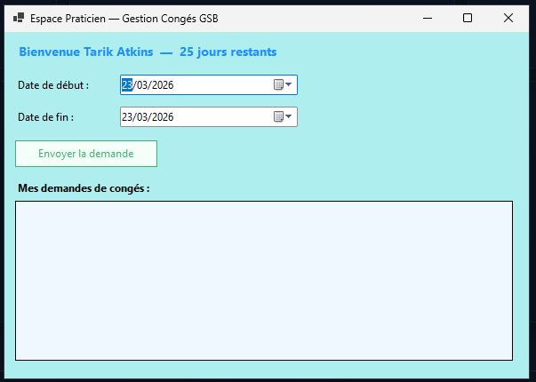
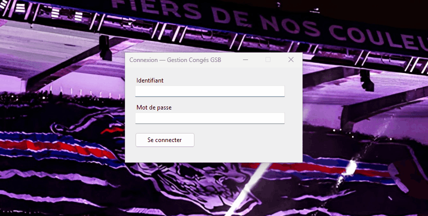

Gestion des congés
Application C# de gestion des demandes de congés pour les praticiens et le service RH. Workflow de validation complet, formulaires distincts par rôle et dashboard temps réel.
Captures d'écran



Démonstrations

Ce que fait l'application
Authentification par rôle
Connexion distincte pour les praticiens et le service RH — accès aux interfaces adaptées à chaque profil.
Demande de congé
Les praticiens soumettent leurs demandes via un formulaire structuré — type de congé, dates, motif.
Validation RH
Le service RH visualise toutes les demandes en attente et les valide ou refuse en un clic avec commentaire.
Dashboard temps réel
Vue d'ensemble des congés en cours, à venir et en attente de validation — mise à jour instantanée.
Historique des demandes
Consultation de l'historique complet par praticien — statut, dates, motifs et décisions RH.
Schéma — GSB_total
praticien
Table
idint PK
nom / prenomvarchar
username / mdpvarcharauthentification
conges_restantint DEFAULT 25
code_type_praticienvarchar FK
utilisateur
Table
idint PK
nom / mdpvarchar
isAdminintrôle RH
userconge
Table
idint PK
praticien_idint FK
date_debut / date_findate
statutenumEn_attente / Acceptee / Refusee / Annulee
commentairetext
date_demandedatetime DEFAULT now()
congeutilisateur
Table
idCongeint PK
idUtilisateurint FK
etatCongeenumAttente / Accepté / Refusé / Annulé
Relations
userconge.praticien_id → praticien.id
congeutilisateur.idUtilisateur → utilisateur.id (CASCADE)
praticien.code_type_praticien → type_praticien.code
Technologies utilisées
C#Langage principal
.NETFramework
MySQLBase de données
Git / GitHubVersioning
Ce que j'ai appris
Gestion des rôles et des vues
Adapter dynamiquement l'interface selon le rôle connecté (praticien vs RH) sans dupliquer
le code a nécessité une architecture claire avec contrôleurs distincts et chargement conditionnel des vues.
Workflow de validation
Modéliser les transitions d'état d'une demande (en attente → validée / refusée) en base
de données et s'assurer de la cohérence des mises à jour en temps réel a été un point clé du projet.
Découverte de C# et .NET
Premier projet C# conséquent — prise en main du typage fort, des namespaces et de la
connexion à MySQL via ADO.NET. La rigueur du langage m'a appris à structurer mon code plus soigneusement.